Project 3 - Camera Calibration and Fundamental Matrix Estimation with RANSAC
The goal of the project is to perform camera caliberation and estimate the fundamental matrix using RANSAC. This project is divided into 3 parts:
- Camera Projection Matrix
- Fundamental Matrix Estimation
- Fundamental Matrix Estimation with RANSAC
Part 1: Camera Projection Matrix
The projection matrix is a 3x4 matrix that that maps pinhole camera 3d points to 2d points in an image. The following projection matrix was obtained
The projection matrix is :
The projection matrix is:
0.7679 -0.4938 -0.0234 0.0067
-0.0852 -0.0915 -0.9065 -0.0878
0.1827 0.2988 -0.0742 1.0000
The total residual is: 0.0445
The estimated location of camera is: [-1.5126, -2.3517, 0.2827]
Part 2: Fundamental Matrix Estimation
The fundamental matrix F is used for obtaining epipolar geometry. The following fundamental matrix is calculated for the given base image pair
F_matrix =
-0.0000 0.0000 -0.0007
0.0000 -0.0000 0.0055
-0.0000 -0.0075 0.1740
Normalization
Without Normalization


With Normalization


As evident from above, normalization helps the line in passing through matched points.
Part 3: Fundamental Matrix Estimation with RANSAC
Part 3 Results
Mount Rushmore - Normalized - Threshold - 0.08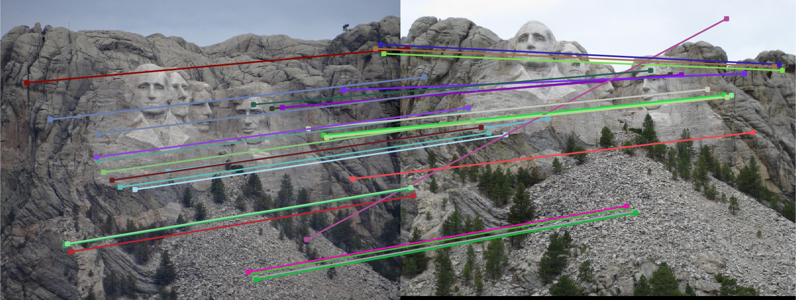 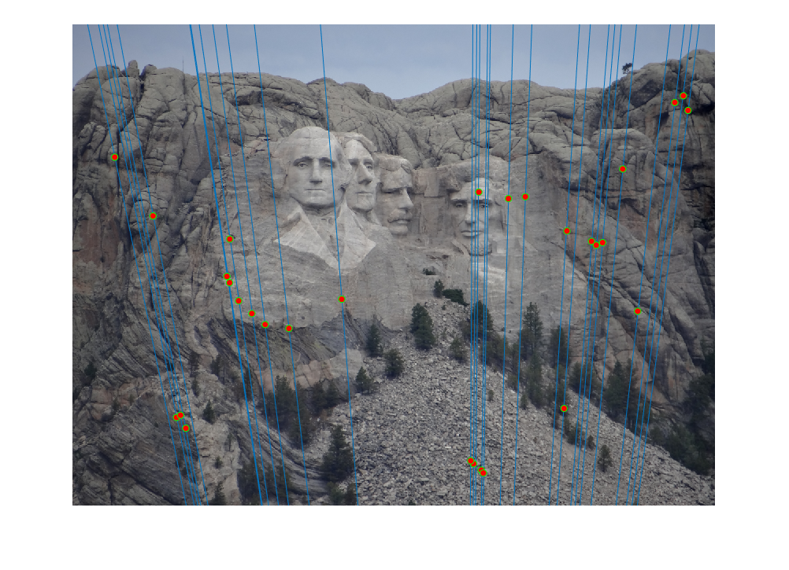 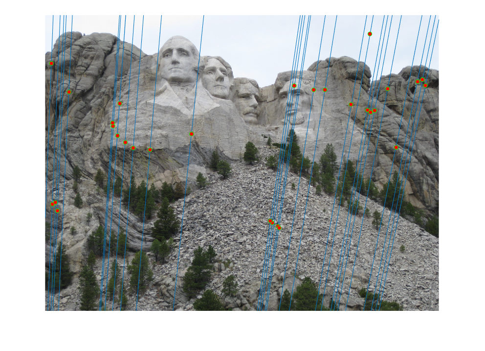 |
Mount Rushmore - Non Normalized - Threshold - 0.08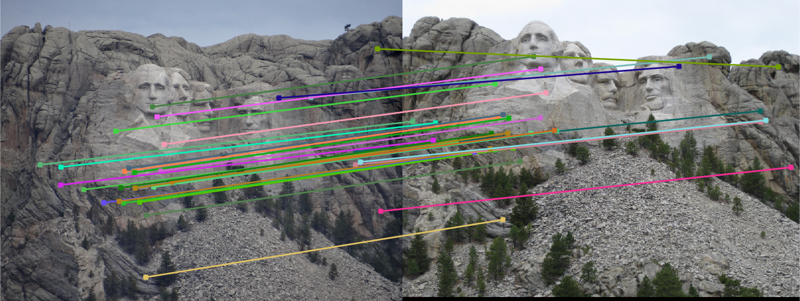 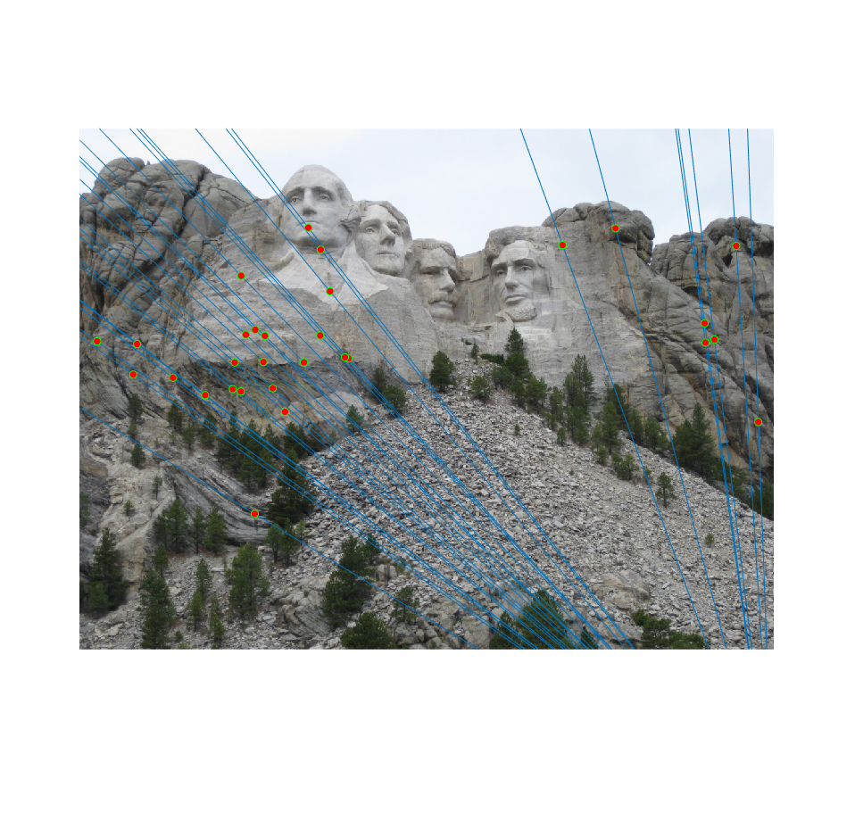 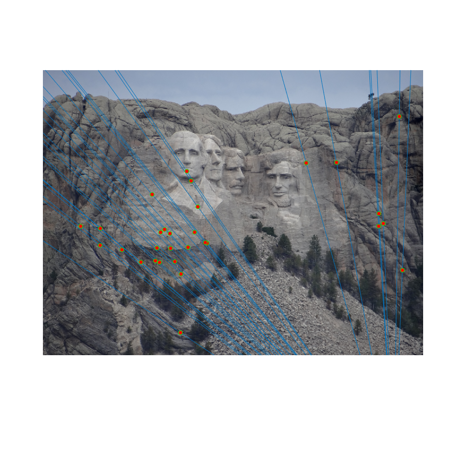 |
Notre Dame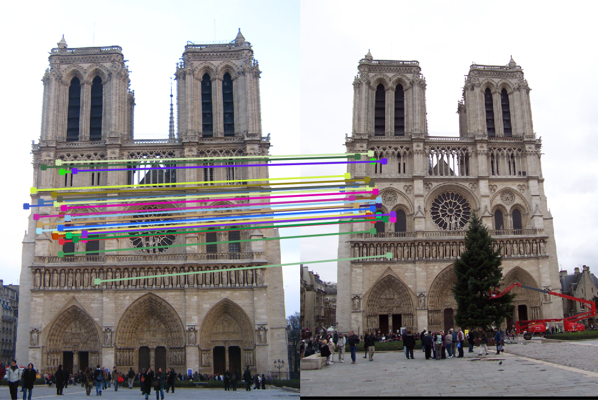 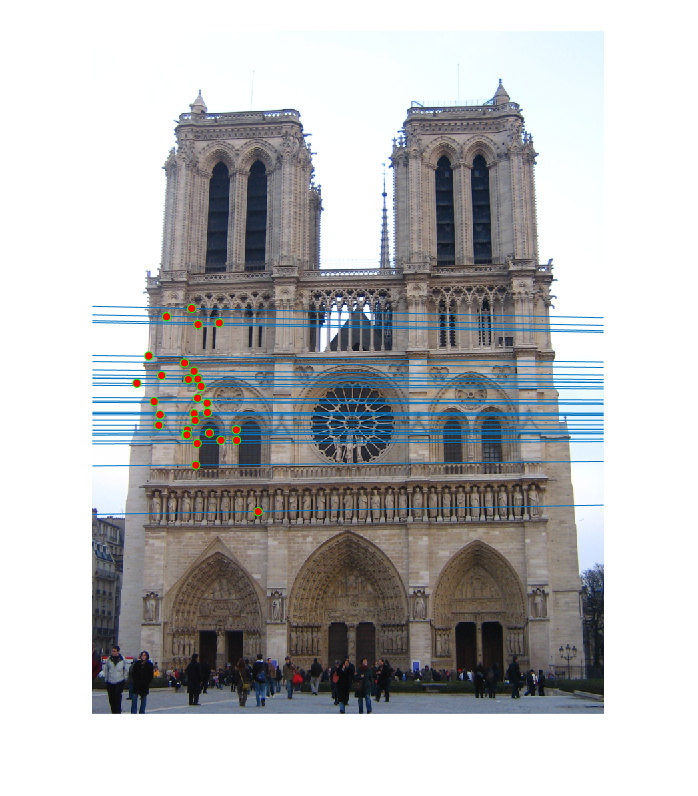 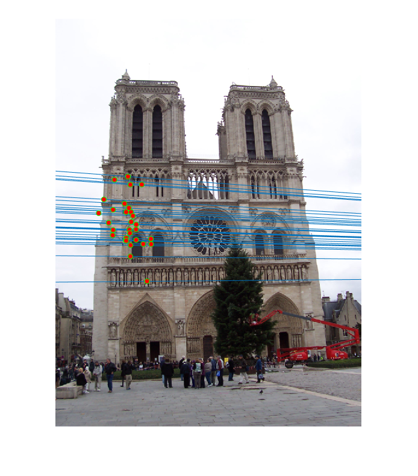 |
Episcopal Gaudi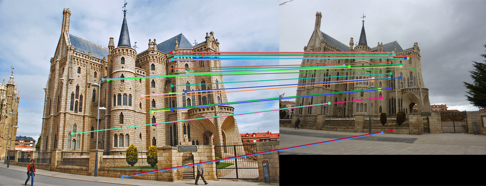 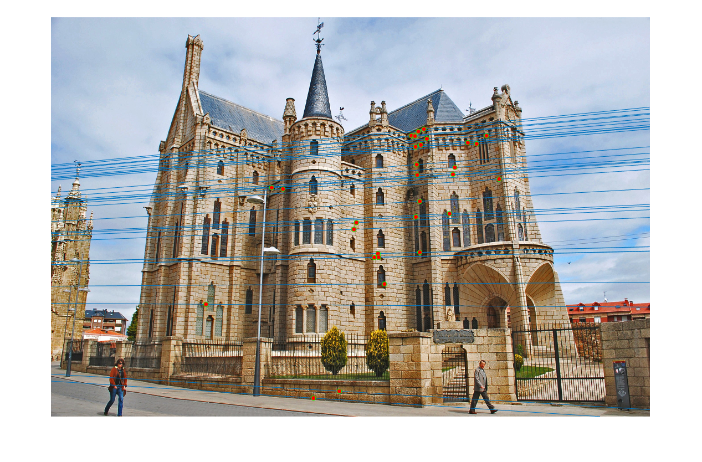 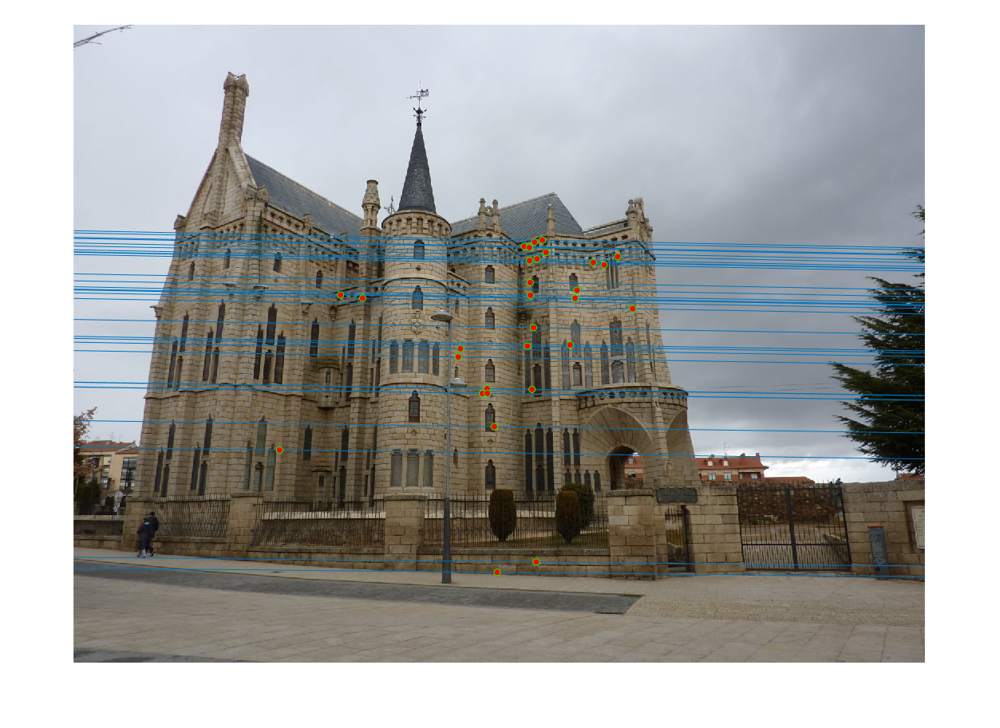 |
Conclusion
We clearly saw how using RANSAC for generation of fundamental matrix can help in removing the spurious matches and we can get almost point to point perfect matching.